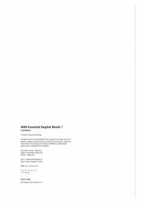

4EIngliz tilidagi eng muhim so'zlarni o'zlashtirish uchun mo'ljallangan samarali o'quv qo'llanma.
Ushbu kitob ingliz tilini o'rganuvchilar uchun mo'ljallangan bo'lib, eng ko'p qo'llaniladigan 4000 ta so'zni o'zlashtirishga yordam beradi. Beshinchi qism murakkabroq so'z boyligini rivojlantirish va ularni kontekstda to'g'ri qo'llash uchun maxsus mashqlar va matnlarni o'z ichiga oladi.